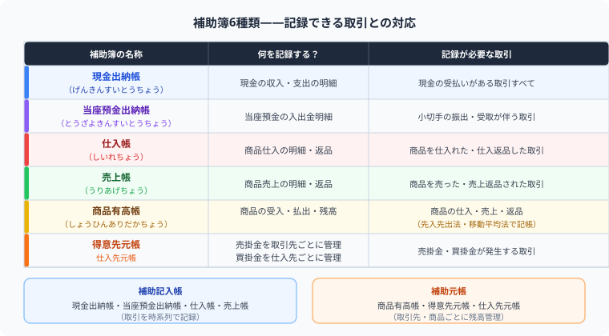

補助簿8種類の選び方を完全解説
どの取引でどの補助簿に記入するか？図解チェック表つき【日商簿記3級】
こんにちは、大谷です！
実は、僕が初めて第2問の補助簿の組み合わせ問題を見たとき、「1つの取引で何個○を付けさせるんだよ！多すぎて意味不明……なんじゃこりゃ！！」と脳がバグりました（笑）。現金出納帳、売上帳、仕入帳、商品有高帳、売掛金元帳、買掛金元帳……名前を覚えるだけでも一苦労なのに、1つの取引で複数の帳簿に○が付くとなると、もう何が何だかわからなくなりますよね。
でも実は、補助簿選びは「取引を分解して、動いた勘定科目に対応する帳簿を当てはめるだけ」のシンプルなパズルです。この考え方に気づいてから、僕はどんな組み合わせ問題も迷わず解けるようになりました。だからこそ、当時の僕と同じように混乱している皆さんに、どこよりも直感的に理解してもらえるよう、僕なりの攻略法をお届けします！
また、モチベーション維持のために、記事の末尾のほうにある【いいねボタン】をポチッと押してもらえると、めちゃくちゃ励みになりますしすごく嬉しいです！
- 補助簿は主に8種類——現金出納帳・当座預金出納帳・仕入帳・売上帳・商品有高帳・売掛金元帳・買掛金元帳・固定資産台帳
- 取引の種類で記入する補助簿が決まる——1つの取引で複数の補助簿に記入することがある
- 試験頻出は「この取引はどの補助簿に記入するか」という選択問題——組み合わせを覚える
- 主要簿（仕訳帳・総勘定元帳）は全取引を網羅。補助簿は特定の取引をより詳しく記録
補助簿は、主要簿（仕訳帳・総勘定元帳）を補助するための帳簿です。取引の種類によって記入する補助簿が決まっており、試験では「この取引は何の補助簿に記入するか」という問題が頻出です。主要な8種類の補助簿をしっかり覚えましょう。
📚 ① 補助簿の主要8種類一覧——何が記録できる帳簿なのかを整理する

日商簿記3級で学ぶ主な補助簿は以下の8種類です。
| 補助簿名 | 記入する取引 | 関連勘定科目 |
|---|---|---|
| 現金出納帳 | 現金の入金・出金 | 現金 |
| 当座預金出納帳 | 当座預金の入金・引出し | 当座預金 |
| 仕入帳 | 商品の仕入（現金・掛け問わず） | 仕入 |
| 売上帳 | 商品の売上（現金・掛け問わず） | 売上 |
| 売掛金元帳 （得意先元帳） |
売掛金の発生・回収 | 売掛金 |
| 買掛金元帳 （仕入先元帳） |
買掛金の発生・支払い | 買掛金 |
| 商品有高帳 | 商品の受入・払出 | 繰越商品・仕入・売上 |
| 固定資産台帳 | 固定資産の取得・売却・減価償却 | 建物・備品・車両など各固定資産勘定 |
売掛金元帳（得意先元帳）は得意先A社・B社それぞれで別ページを設けます。同様に買掛金元帳（仕入先元帳）も仕入先ごとに別ページ。これにより「A社に対していくら売掛金があるか」が一目でわかります。
商品有高帳でいちばん間違えやすいのが、売上（払出）のときの記入金額です。「100円で仕入れた商品を150円で売った」場合、売上帳には売価150円を書きますが、商品有高帳の払出欄に書くのは売価150円ではなく、原価100円です。
なぜなら商品有高帳は「商品という在庫が、原価ベースでいくら会社に残っているか」を管理する帳簿だからです。売った値段（利益が乗った金額）を書いてしまうと、在庫の原価計算（先入先出法・移動平均法）が根本から崩れてしまいます。「売上帳は売価、商品有高帳は原価」とセットで唱えて覚えましょう。
試験の第2問で商品有高帳の払い出しを書くときは、計算用紙の余白に【＠100円のハコ】【＠120円のハコ】と縦に並べて手書きしましょう。先入先出法なら、上の古いハコから順番に指で消し込みながら電卓を叩く。この泥臭い「ハコ消しゴムハック」をやるだけで、本番のパニックによる集計ミスが100%ゼロになりますよ！
🔍 ② どの取引でどの補助簿に記入するか——取引と帳簿の対応を一覧で整理する
1つの取引が複数の補助簿に記入されることもあります。例えば「掛売上」は売掛金元帳と商品有高帳の両方に記入します。
| 取引内容 | 現金 出納帳 |
当座預金 出納帳 |
仕入帳 | 売上帳 | 売掛金 元帳 |
買掛金 元帳 |
商品 有高帳 |
固定資産 台帳 |
|---|---|---|---|---|---|---|---|---|
| 現金で商品を仕入 | ✔ | — | ✔ | — | — | — | ✔ | — |
| 掛けで商品を仕入 | — | — | ✔ | — | — | ✔ | ✔ | — |
| 現金で商品を売上 | ✔ | — | — | ✔ | — | — | ✔ | — |
| 掛けで商品を売上 | — | — | — | ✔ | ✔ | — | ✔ | — |
| 売掛金を現金で回収 | ✔ | — | — | — | ✔ | — | — | — |
| 買掛金を当座預金で支払 | — | ✔ | — | — | — | ✔ | — | — |
| 備品を現金で購入 | ✔ | — | — | — | — | — | — | ✔ |
| 固定資産の減価償却 | — | — | — | — | — | — | — | ✔ |
具体例：掛売上の場合——売上帳と売掛金元帳の両方に記入するパターン
A社に商品50,000円を掛けで売り上げた場合、記入する補助簿は以下の2つです。
- 売掛金元帳（A社）：A社の売掛金が50,000円増加
- 商品有高帳：商品50,000円分が払い出された
当座預金出納帳・買掛金元帳には記入しません。現金の動きがなく、買掛金も関係しないためです。
📝 ③ 試験での出題パターン——「複数の補助簿に○を付ける」問題の解き方
試験では「次の取引を記入する補助簿をすべて選びなさい」という形式が典型的です。解き方のポイントを整理します。
解き方のステップ——取引を「何が動いたか」で分解してチェックする
- 取引文を読んで、仕訳を頭の中で切る
- 借方・貸方に登場する勘定科目を確認する
- その勘定科目に対応する補助簿を選ぶ
「得意先B社から売掛金30,000円を当座預金で回収した」→ 記入する補助簿は？
仕訳：当座預金 30,000 ／ 売掛金 30,000
答え：当座預金出納帳 ＋ 売掛金元帳（B社）の2つ
📖 ④ 主要簿（仕訳帳・総勘定元帳）との関係——全取引の記録と特定取引の詳細記録の違い
補助簿を理解するには、まず主要簿との関係を押さえましょう。すべての取引は必ず主要簿に記録され、補助簿はその明細を補うために存在します。
主要簿の2種類——仕訳帳と総勘定元帳それぞれの役割
| 帳簿名 | 役割 | 記録の単位 |
|---|---|---|
| 仕訳帳 | 取引の発生順に借方・貸方を記録 | 取引発生順（時系列） |
| 総勘定元帳 | 仕訳帳から「転記」して勘定科目ごとに残高を管理 | 勘定科目別 |
会計の基本フロー：取引発生 → 仕訳帳に記入 → 総勘定元帳に転記 → 試算表（T/B）→ 財務諸表
仕訳帳の「元丁欄」には転記先の総勘定元帳ページ数を、総勘定元帳の「仕丁欄」には転記元の仕訳帳ページ数を記入します。これにより相互参照ができ、転記ミスを発見しやすくなります。
💡 ⑤ 補助記入帳と補助元帳の違い——「時系列で記録」か「取引先・商品ごとに記録」か
補助簿は補助記入帳と補助元帳の2種類に分かれます。
| 種別 | 記録の方式 | 主な帳簿 |
|---|---|---|
| 補助記入帳 | 特定勘定の増減を取引発生順に記録 | 現金出納帳・当座預金出納帳・小口現金出納帳・受取手形記入帳・支払手形記入帳・売上帳・仕入帳 |
| 補助元帳 | 取引先別・品目別に分類して管理 | 売掛金元帳（得意先元帳）・買掛金元帳（仕入先元帳）・商品有高帳・固定資産台帳 |
補助記入帳の全種類——現金出納帳・当座預金出納帳・仕入帳・売上帳
- 現金出納帳：現金の収支を詳細に記録
- 当座預金出納帳：当座預金の入出金を記録
- 小口現金出納帳：用度係が管理する小口現金の支払明細
- 受取手形記入帳：受け取った手形の入出し（振出人・満期日・金額）を管理
- 支払手形記入帳：振り出した手形の入出しを管理
- 売上帳・仕入帳：売上・仕入の取引を詳細に記録
主要簿（仕訳帳・総勘定元帳）の作成は義務ですが、補助簿の作成は任意です。ただし、内部管理や試験対策では必須の知識です。試験では「この取引はどの補助簿に記入するか」が問われます。
次の各取引について、記入する補助簿をすべて答えなさい。
- ① 商品80,000円を仕入れ、代金は現金で支払った
- ② 得意先C社に商品120,000円を掛けで売り上げた
- ③ 仕入先D社への買掛金50,000円を小切手を振り出して支払った
- ④ 備品300,000円を当座預金から購入した
- ⑤ 得意先E社の売掛金40,000円が当座預金に振り込まれた
よくある質問
補助簿と主要簿の違いは何？
主要簿（仕訳帳・総勘定元帳）はすべての取引を記録する必須帳簿です。一方、補助簿は特定の勘定科目や取引先の詳細を管理するための帳簿で、作成は任意です。主要簿は「全体を把握」、補助簿は「明細を把握」するためのものと覚えましょう。試験では補助簿の種類と記入ルールが頻出です。
1つの取引で複数の補助簿に記入することはあるの？
あります。例えば「得意先に商品を掛けで売り上げた」場合は、売掛金元帳と商品有高帳の両方に記入します。仕訳の借方・貸方に登場する勘定科目をすべて確認し、それぞれの勘定科目に対応する補助簿を選ぶのがポイントです。
補助記入帳と補助元帳の違いは？
補助記入帳は取引の発生順（時系列）に記録する帳簿で、現金出納帳・当座預金出納帳・売上帳・仕入帳などがあります。補助元帳は取引先別・品目別に分類して管理する帳簿で、売掛金元帳（得意先元帳）・買掛金元帳（仕入先元帳）・商品有高帳などが該当します。
まとめ：補助簿 早見表
補助簿選びも商品有高帳のハコ消しも、全部パズルのピースを当てはめるゲームだ！
最初は「8種類も覚えられない」「原価と売価がごっちゃになる」と絶望しかけますが、取引を「何が動いたか」で分解するコツと、手を動かす「ハコ消しゴムハック」さえ掴めば、驚くほどスラスラ解けるようになります。焦らず1つずつ、パズルを解く感覚で攻略していきましょう。
この記事が少しでも「あ、わかった！」につながったら、この下にある【いいねボタン】をポチッと押してもらえると、めちゃくちゃ嬉しいですし、次の記事を書く力になります！
そして、覚えた知識は使わなければすぐ忘れてしまうもの。Study Questで今日の学習時間を記録して、合格までの成長を「見える化」していきましょう。